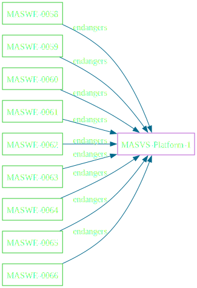
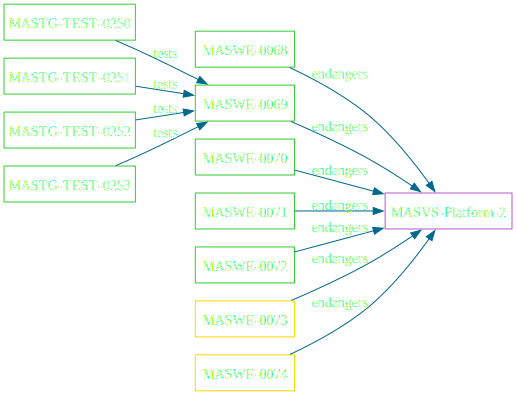
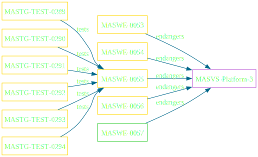
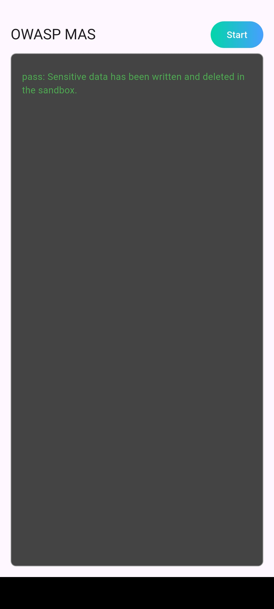
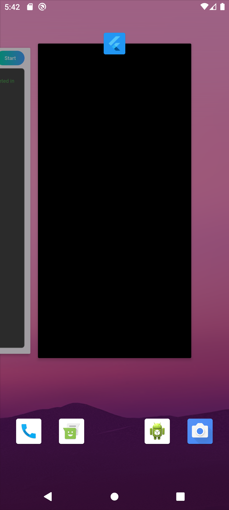

Die Sicherheit mobiler Apps hängt stark von ihrer Interaktion mit der mobilen Plattform ab.
The app uses IPC mechanisms securely.
The app uses WebViews securely.
The app uses the user interface securely.
L1, P
L1, P (cont.)
L1, P
L2
L1, P
L2



Tests MASTG-TEST-0289 und MASTG-TEST-0290 prüfen, ob Weakness MASWE-0055 zu Control MASVS-PLATFORM-3 vorhanden ist.
MASWE-0055
Sensitive Data Leaked via Screenshots or Screen Recordings.
MASVS-PLATFORM-3
The app uses the user interface securely.
oder

secure_applicationsecure_applicationsecure_application schützt vor ungewollten
EinsichtenDie Funktion secure des SecureApplicationController verhindert beispielsweise Screenshots.
